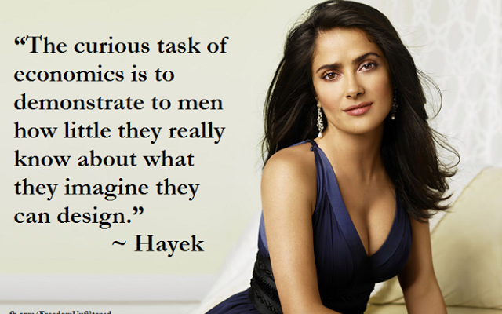

Friedrich Hayek was notoriously less savvy with photoshoots than some of his relatives.[1. Someone has since disabused me of the idea I picked up somewhere that Salma Hayek is distantly related to Friedrich.]A few years ago I read some John Gray on Friedrich Hayek. In short, he's very good on Hayek, though he seems to have moved on rather to larger topics, not always to good effect. Anyway, If you have the best part of an hour, you could do a lot worse than read Gray on Hayek back in 1982 when Gray was (I think) something of a fellow traveller (and it was less evident how badly some neoliberal reform would go – I'm looking at you GFC). And here's an excellent revisiting of Hayek 33 years later. I recommend both.I really should have written the words above just to let you know of two excellent essays, but I probably wouldn't have bothered but for the reaction I got from John Burnheim when I sent him a link to the first essay above. Below the fold are the words he sent back in reply. As usual, there seems to be a vast depth of thought behind his words.
I think Gray is right about Hayek, but wrong in endorsing him. Hayek was a conservative liberal; whose hero was Mill. One libertarian had a point in characterising him as moderate social democrat. I once made a close comparison of him and Marx in relation to Socialism. Marx disliked socialism, but thought it necessary to destroy capitalism and open the way to Communism, the freedom of the producers. Hayek claimed to share the humanitarian values of the social democrats, but said he disagreed about how to realise them. Capitalism freed the producers and rewarded them for producing what people wanted. Market prices are the unique way of transmitting the necessary information. Marx admitted that he did not know how communists would achieve that. Both were wrong in their own way, but right in rejecting the egalitarianism of the socialist regimentation.
Where both were wrong was in assuming that a society must have only one way of dealing with all human wants instead of admitting that different needs, especially needs for public goods might require different means of production and distribution or that a society consists of a multiplicity of overlapping communities. Both suffered from the disease of philosophy.
What I like about both is their emphasis on the importance of the dynamics of social practices as opposed to ideals as the determinant of social roles and their outcomes on a much broader front than the economy. But both fail to get it right, In H’s case because of his Kantian errors. One mistake was to accept the traditional idea that knowledge consists of nebulous pictures that we just see or look at. As C S Peirce discovered, knowledge of an object is a capacity to deal with it successfully in its theoretical and practical connections.
Far from having no knowledge of things in themselves, we have extraordinarily precise and extensive knowledge of the external world, though we have not reliable images of it. Contrary to the traditional assumption that knowledge refers to perfect, immaterial ideas that get distorted in material instances, it turns out that matter can be known exactly, but spiritual ideas are complicated and messy. It is not the structure of our minds that brings order into live experience, but the structure of our methods of identifying, dissecting and interrelating things.
However, because complexes have properties that go beyond those of their components, the knowledge of physical reality is of little use in helping members of complexes to understand the complexes to which they belong, and the modes of theorisation appropriate to those components themselves are often inappropriate to understanding the complexes. We know quite a lot about the components of our brains but hardly anything about its functional dynamics and how it is encoded with cognitive and emotive signifiers. What is pretty certain is that its workings are nothing like those of digital models.
None of this is to say that we don't have many snippets of knowledge independently of science. They and even much science is contextual in ways we cannot allow for. That is why I always present my views about solutions to practical problems as suggestions and it is in this guise that I believe one should read others.
wow Nick I didn't know Hayek turned into the most attractive Transgender I have ever seen. The multivitamins did him/her very well
Look, I'm all in favour of gratuitous pics of Salma Hayek, but you've over-reached this time. She's not in the slightest bit related to von Hayek. Salma's "Hayek" comes from Lebanon (from the Arabic for "weaver"), as her grandfather was born there, whereas Friedrich's "Hayek" comes from Czech - not even the same language, let alone family.
Thanks Fyodor, and nice to see you round these parts again.
I expect you're right. I had got it into my head that she was a second cousin once removed or something.
Then again, Geni told me last year that I'm the tenth cousin of Anne Frank and seventh cousin of Roslyn Franklin, so you just don't know what's going to turn up.…
May be of interest NYRB review of John Grays Seven Types of Atheism Titled The Myth of Progress Christopher Beha
I just knew I should have obtained a trade mark on Salma as a blog feature image. At least my image is suitably salacious. http://clubtroppo.lateraleconomics.com.au/2011/02/04/a-short-history-of-red-tape-and-efforts-to-bust-it-part-/
Salma might be the sister of Jana Wendt.
I was going to say something, anything but when I gazed into her eyes, so warm and inviting, I lost all sense of time and meaning.
Sigh.
There might be a haiku there, or maybe not.